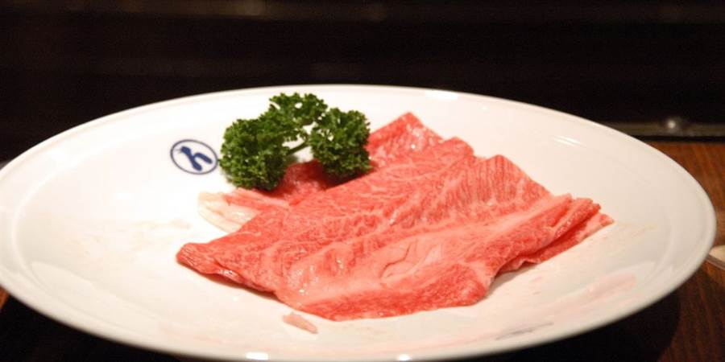

Giorno 7 di 15 · Mercoledì 9 dicembre · Fuori porta
Fuori porta: Castello di Himeji e Kobe
📌 In sintesi
- Mattina Himeji, il castello più bello del Giappone. Vero, in legno, mai bruciato.
- Pomeriggio il giardino Koko-en, poi treno per Kobe.
- Sera Nankinmachi, il porto illuminato e la bistecca di Kobe.
🕘 Itinerario della giornata
- 08:00Kyoto → Himeji — Shinkansen Hikari o Nozomi, 45-60 minuti diretti, ~5.500 yen. In alternativa il JR Special Rapid via Osaka: 1h30 ma ~2.300 yen e si paga con la ICOCA.
- 09:15Dalla stazione al castello — si esce dall'uscita nord e il castello è lì in fondo, in asse con il viale, a un chilometro esatto. È una delle passeggiate d'ingresso più belle del Giappone: la sagoma bianca cresce davanti a voi per quindici minuti.
- 09:40Castello di Himeji — il primo sito giapponese iscritto all'UNESCO, e l'unico grande castello originale: costruito nel 1609, non è mai stato distrutto né da un incendio né dalla guerra né dal terremoto di Kobe. Quello di Osaka è cemento armato del 1931; questo è la struttura in legno vera, con le scale ripidissime, le feritoie per gli archibugi e i pavimenti che scricchiolano. Lo chiamano Shirasagi-jo, il Castello dell'Airone Bianco. 1.000 yen il solo castello — ma il Comune ha annunciato un aumento del biglietto per i visitatori stranieri nel corso del 2026: controllate il prezzo aggiornato prima di partire.
- 11:30Il sentiero a spirale — la parte più interessante è il percorso d'accesso: un labirinto di cortili e porte progettato per far girare a vuoto gli assedianti sotto il tiro dei difensori. Guardatelo dall'alto dal sesto piano e si capisce tutto.
- 12:15Koko-en — nove giardini in stile Edo appena fuori dalle mura, ricostruiti nel 1992 sulle fondamenta delle residenze dei samurai. Biglietto combinato con il castello a 1.050 yen totali: costa praticamente niente e in dicembre è vuoto. C'è una casa da tè con vista sullo stagno delle carpe.
- 13:15Pranzo a Himeji — lungo il viale del castello o nella galleria coperta Miyuki-dori vicino alla stazione.
- 14:30Himeji → Kobe (Sannomiya) — JR Special Rapid, 40 minuti, ~1.000 yen con la ICOCA.
- 15:15Nankinmachi — la Chinatown di Kobe, tre strade attorno a una piazzetta con il padiglione. Piccola ma vivissima, con i banchi di butaman (panini al vapore ripieni di maiale) e le lanterne rosse. Si mangia fermi accanto al banco, come ovunque in Giappone.
- 16:15Kitano-cho (opzionale) — la collina delle ijinkan, le case dei mercanti stranieri di fine Ottocento: vetrate, mattoni e tetti a punta. Bizzarro e molto fotogenico, ma è in salita e con il buio perde molto — fatelo solo se siete in anticipo.
- 16:45Meriken Park e Harborland — il porto al tramonto: la Kobe Port Tower in tralicci rossi, la Torre Marittima, la ruota panoramica illuminata e il memoriale del terremoto del 1995, lasciato com'era. Al buio l'intera baia si accende.
- 18:00Cena a Kobe — è il posto giusto per la bistecca (vedi sotto).
- 20:00Kobe → Kyoto — JR Special Rapid diretto da Sannomiya, ~50 minuti. Ultimo rapido intorno alle 22:30, quindi nessuna fretta.
🗺️ La mappa del giro
🍜 Dove mangiare

- Pranzo a Himejianago-meshi — grongo di mare di Akashi grigliato con salsa dolce su una ciotola di riso. Lo trovate lungo Miyuki-dori, la galleria coperta fra stazione e castello.
- Cena a Kobeil manzo di Kobe è wagyu certificato Tajima e va mangiato in teppanyaki, con lo chef che cuoce davanti a voi. Nei ristoranti seri 8.000-15.000 yen a testa; Steakland è l'opzione famosa da ~4.000 a pranzo. Il compromesso economico è il Kobe beef sando.
💡 Note e dritte
Perché Himeji al posto di Nara. Nara l'avete già fatta e non vi ha detto molto, giusto. Himeji risponde a una cosa diversa: è l'unico grande castello giapponese arrivato intatto fino a oggi, e il confronto con Osaka di sabato è la parte migliore — lì entrate in un ascensore dentro un edificio in cemento del 1931, qui salite sei piani di scale di legno del 1609 con i travi originali sopra la testa. Se una sola cosa doveva sostituire i cervi, questa è quella che rende di più.
Kobe è nel mezzo, quindi è gratis in termini di tempo. Sta esattamente sulla via del ritorno: quaranta minuti da Himeji e cinquanta da Kyoto. Ci arrivate a metà pomeriggio, vedete Chinatown e il porto illuminato, cenate e siete in hotel per le 21. Se siete stanchi, saltatela e tornate diretti: perdete la cena, non la giornata.
Costi indicativi in due: ~11.000 yen di Shinkansen A/R (o ~6.500 con i treni rapidi), 2.100 yen di ingressi combinati castello+giardino, più la cena. Nessuna prenotazione necessaria: il castello non ha slot orari e i rapidi non hanno posti riservati.
Uscita facoltativa: Uji, mezza giornata Opzionale
Himeji è l'uscita fuori porta principale e occupa questa giornata intera. Se ne volete una seconda in Kansai, la scelta giusta a dicembre è Uji: venti minuti di treno da Kyoto, mezza giornata scarsa, e soprattutto non dipende dalla stagione — quello che si va a vedere è architettura, un fiume e il tè, non il bosco. Funziona identico a dicembre e ad aprile.
- Byodo-in — la Sala della Fenice del 1053, uno dei pochissimi edifici dell'epoca Heian sopravvissuti, con le due fenici di bronzo sul tetto. È l'edificio disegnato sulla moneta da 10 yen, e le fenici sono sulla banconota da 10.000: probabilmente lo avete già in tasca senza saperlo. Si specchia in uno stagno pensato apposta per riflettere la facciata. Ingresso al parco 700 yen; l'interno della sala costa 300 yen in più, si prenota all'ingresso per fasce di 20 minuti e vale la pena — dentro c'è il Buddha Amida dorato di Jocho, e cinquantadue bodhisattva musicanti appesi alle pareti.
- Hoshokan — il museo interrato del tempio, moderno e climatizzato, incluso nel biglietto: qui stanno le fenici originali e la campana, sostituite all'esterno da copie.
- Ujigami Jinja — dall'altra parte del fiume, gratis, cinque minuti di visita: è la più antica architettura di santuario ancora in piedi in Giappone (circa 1060). Non è spettacolare, è vecchia — e sapendolo cambia.
- La via del tè — Uji è il nome del tè verde giapponese. Tsuen, all'imbocco del ponte, vende tè dal 1160 e la stessa famiglia lo gestisce da ventiquattro generazioni. Nakamura Tokichi è quello con la coda fuori: parfait e gelatina di matcha, e il chasoba, soba impastata col tè verde.
- Il fiume — Uji è l'ambientazione degli ultimi dieci capitoli del Genji monogatari; c'è anche un museo dedicato, se il libro vi dice qualcosa. Altrimenti basta il ponte: è documentato dal 646 d.C.
Come incastrarla: il programma non ha mezze giornate libere, quindi va scambiata. Il posto che costa meno è la mattina del Giorno 5: partite da Kyoto alle 8:15, siete a Byodo-in alle 8:50, rientrate alle 13:10 e riprendete la giornata da Nishiki alle 13:45 come previsto. Si perdono il Castello di Nijo e il Manga Museum — se una delle due cose vi interessa davvero, allora Uji lasciatela stare. Costo: ~500 yen di treno e 1.000 di ingressi a testa.
L'alternativa da zero minuti, invece di una gita: il quartiere delle distillerie di sake a Fushimi, che sta a sette minuti di Keihan da Fushimi Inari — cioè alla fine del Giorno 2, senza spostare niente. Fushimi è una delle due capitali del sake giapponese e dicembre è la stagione della produzione: è il periodo dello shinshu, il sake nuovo, e fuori dalle distillerie si vedono i sugidama, le sfere di cedro appese che ingialliscono col passare dei mesi. Ci sono i vicoli di magazzini bianchi lungo il canale, la locanda Teradaya dove nel 1866 tentarono di uccidere Sakamoto Ryoma, e le birrerie-distillerie dove si cena. Unico avvertimento: il museo Gekkeikan Okura chiude alle 16:30, quindi o rinunciate al tramonto sui torii e arrivate per le 15:30, oppure andateci solo per la cena e il bere — che a dicembre, con il sake nuovo, è comunque il motivo migliore per andarci.